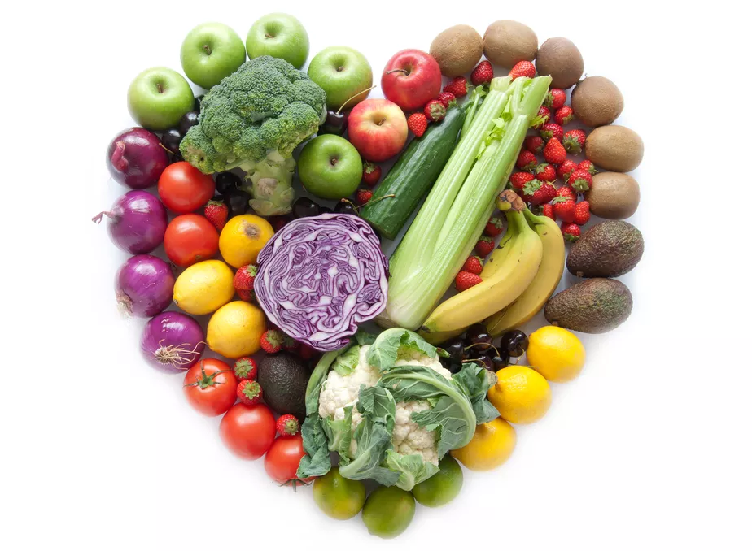

Tradicionalmente, a caldeirada, em Portugal e na Galiza, é um cozido, ou seja, uma preparação que não passa pelo refogado, cujos componentes básicos são diversas variedades de peixe, batata, cebola, tomate e pimentão. O tempero deste prato pode incluir apenas sal de cozinha e azeite, ou vários outros condimentos, como pimenta, salsa ou outros. Em Angola e Moçambique, é frequente fazer-se caldeirada de cabrito, em que a forma de preparar é semelhante à indicada para peixe. No Brasil a Caldeirada é feita à base de azeite de dendê, leite de coco, coentro, salsinha ou cheiro-verde, pimenta, tomate, pimentão, postas de peixe tipo namorado, robalo ou cação, e frutos do mar tipo: mexilhão, polvo, lula acrescidos de sal. A Caldeirada Brasileira é na verdade uma moqueca acrescida de vários Frutos do Mar.
INGREDIENTES

Frango
Tomate
Cebola
Cenoura
Pimentão
Alho
Limão
Molho de tomate
Ervilha
Sal
Batata inglesa
MODO DE PREPARO
Temperar o frango: corte o frango em pedaços pequenos; pisa o alho junto com o sal e coloque no frango em uma panela, em seguida esprema o limão e misture
Cortar os legumes:: adicione o tomate, cebola, cenoura, pimentão, a batata e o molho de tomate na panela com o frango e leve ao fogão com a chama no mínimo para refogar. Depois que o tomate estiver todo amassado adicione uma chávena de água para cozer o frango e a batata
Final:Depois que o frango e batata estiver pronto adicione a ervilha e deixa cozer por mais 2 minutos e temos o nosso molho. Podes fazer o arroz para acompanhar